기존 방식과 비교해 커스텀아이즈 라섹이 수술 후 야간 빛번짐, 흐려보임 등 시력의 질에 미치는 영향을 분석 했습니다. 근시·난시교정 뿐 아니라 수술 후 선명도까지 고려한 라섹의 기준을 정립했습니다.

아이리움 연구 : CustomEyes Outcomes. JCRS 2016 / JCRS 2017
수술 후 잘 보이는 것만으로는 부족합니다. 커스텀아이즈는 야간 빛번짐과 눈부심은 물론, 시력의 질까지 세심하게 고려하는 아이리움의 맞춤 라식·라섹입니다.
*국내 유일 4세대 커스텀아이즈 시행 (2026년 1월 기준)
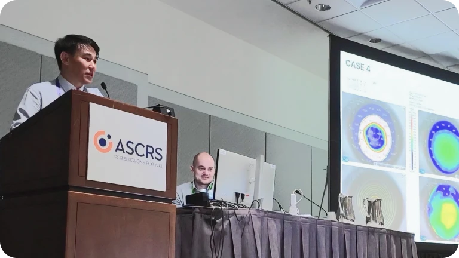
강성용 원장, 커스텀아이즈 재교정 미국백내장굴절수술학회
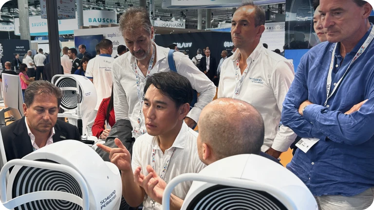
독일 슈빈트 CustomEyes 의료자문위원
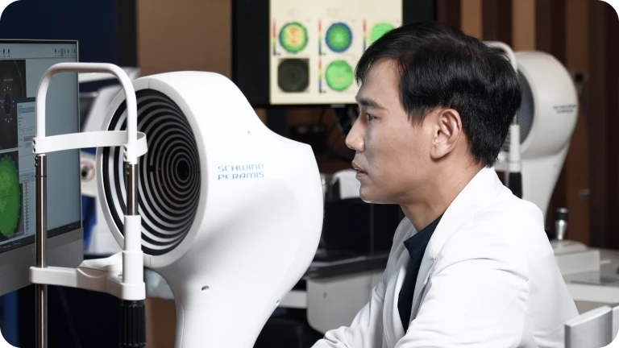
PERAMIS 진단검사 (EYEREUM ONLY)
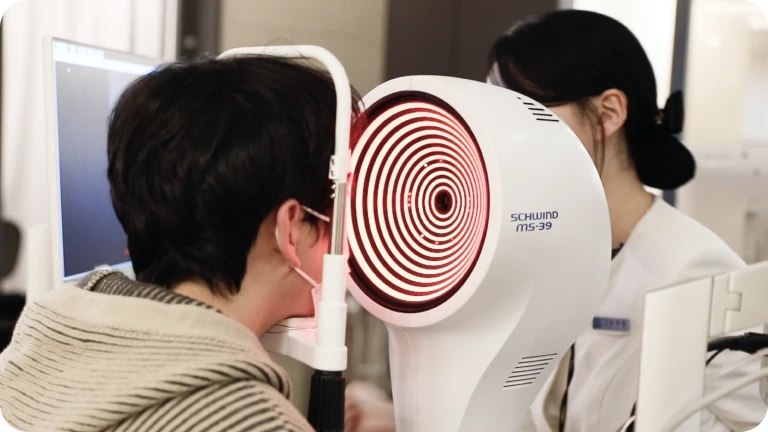
MS-39 진단검사 국내 첫 시행
각막과 안구 전체 데이터를 정밀하게 분석하고 커스텀아이즈 수술 설계와
아이리움 투데이 회복 프로토콜을 결합합니다.
70여 가지 정밀검사와 MS-39, PERAMIS를 통해 각막·안구 전체 데이터를 분석합니다.
분석된 데이터를 아마리스 레드 1050RS와 연동해 개인별 각막 프로파일을 설계합니다.
근시·난시뿐 아니라 고위수차, 야간 빛번짐, 각막 형태까지 고려해 수술값을 정교하게 설계합니다.
SmartSurf 기반 절삭과 아이리움의 상피 회복 관리를 통해 빠른 회복과 높은 시력의 질을 동시에 실현합니다.
회복 속도는 기본, 각막 상태와 시력의 질 목표에 따라
커스텀아이즈 설계 범위를 달리합니다.
* 상피 회복 기간과 수술 결과는 개인의 각막 상태, 근시·난시 정도, 눈물막 상태, 회복 양상에 따라 차이가 있을 수 있습니다.
* 수술 방식은
정밀검사 후 의료진 상담을 통해 결정됩니다.
아이리움은 단순한 회복 속도만이 아니라, 수술 후 시력의 질, 난시 교정, 재교정, 각막 안정성까지
커스텀아이즈 라섹의 결과를 연구해왔습니다.
기존 방식 대비
커스텀아이즈 수술 결과
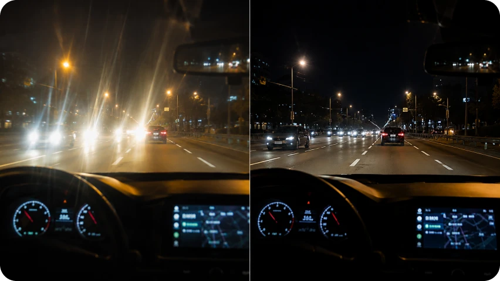
기존 방식과 비교해 커스텀아이즈 라섹이 수술 후 야간 빛번짐, 흐려보임 등 시력의 질에 미치는 영향을 분석 했습니다. 근시·난시교정 뿐 아니라 수술 후 선명도까지 고려한 라섹의 기준을 정립했습니다.
아이리움 연구 : CustomEyes Outcomes. JCRS 2016 / JCRS 2017
고도난시에서의
커스텀아이즈 결과
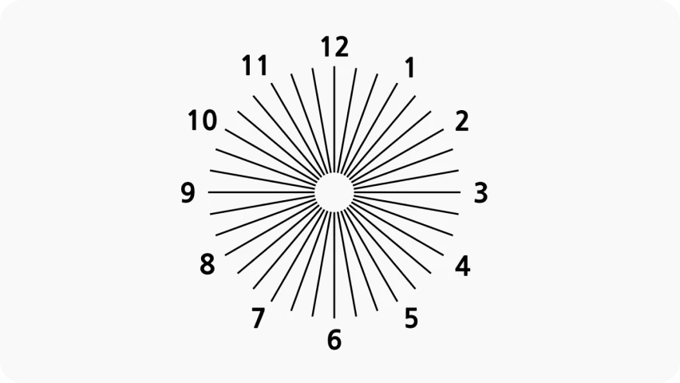
도난시 환자군에서 커스텀아이즈 라섹의 난시 교정 정확도와 임상 결과를 분석했습니다. 난시축과 각막 형태를 함께 고려해야 하는 환자군에서 맞춤 설계가 필요합니다.
아이리움 연구 : CustomEyes for High Astigmatism / JRS 2018
경도근시에서의
커스텀아이즈 결과
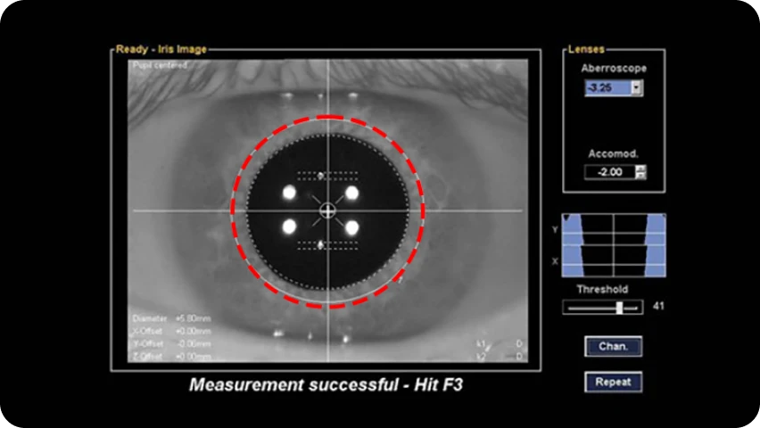
경도근시 환자에서 광학부를 넓게 설계한 커스텀아이즈 라섹 결과를 분석했습니다. 도수가 낮더라도 야간 시야와 선명도를 고려한 각막 절삭 맞춤 설계가 중요합니다.
아이리움 연구 : CustomEyes for Low Myopia / JCRS 2019
타원 스마일 수술 후
재교정
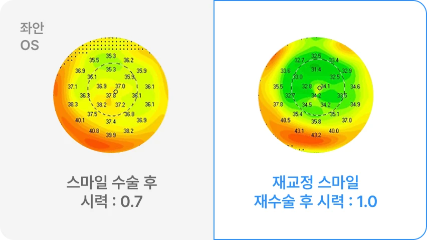
타원 스마일 수술 후 남은 렌티큘 조각으로 시력 불편이 발생한 사례에서, 커스텀아이즈 라섹을 적용해 재교정한 결과를 발표했습니다. 시력 불편 원인 분석과 이에 맞는 개인별 맞춤 재교정이 필요합니다.
Low Energy SMILE 시력 회복 연구
American Journal of Ophthalmology. 2017.
각막 고위수차를 줄이는
커스텀아이즈
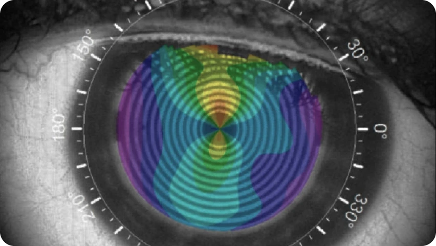
시력의 질에 영향을 줄 수 있는 각막 고위수차 측면에서, 커스텀아이즈 라섹과 스마일 수술 결과를 비교했습니다. 커스텀아이즈 라섹이 시력의 질 측면에서 경쟁력 있는 선택지임을 객관적으로 확인했습니다.
아이리움 연구 : CustomEyes vs SMILE HOAs
JCRS 2018 · 아이리움 의료진 참여
각막강화술 결합
커스텀아이즈 안전성
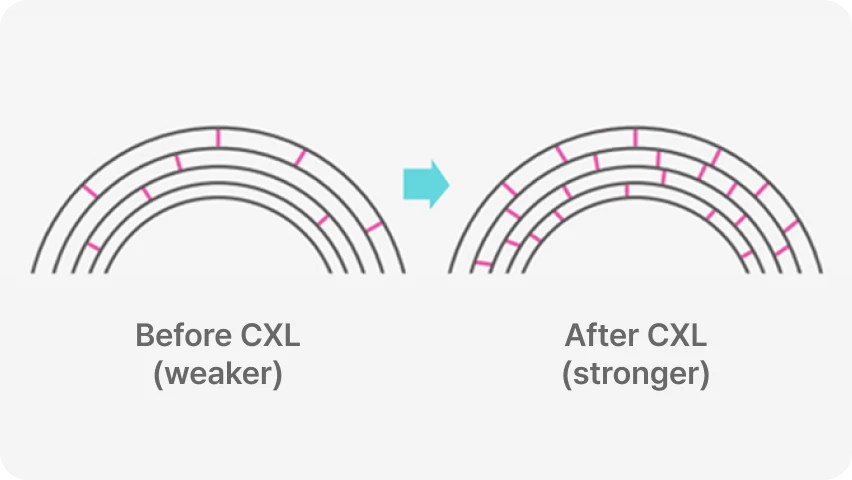
각막강화술을 결합한 커스텀아이즈 라섹의 각막 안정성과 수술 결과를 분석했습니다. 각막 상태에 따라 안전성을 높이기 위한 추가 설계가 필요함을 제시했습니다.
아이리움 연구 : CustomEyes with Cross-Linking BMC Ophthalmology 2016 / JCRS 2017 / Cornea 2017
Exceptional Results, The EYEREUM Advantage
코마수차는 빛이 한 점에 모이지 못하고 비대칭하게 번져 보이거나 흐려 보이는 현상을 유발합니다. 커스텀아이즈 라섹은 이러한 개인별 고위수차 데이터를 정밀하게 반영하여, 수술 후 더욱 선명하고 깨끗한 시야를 확보하는 것을 목표로 설계됩니다.
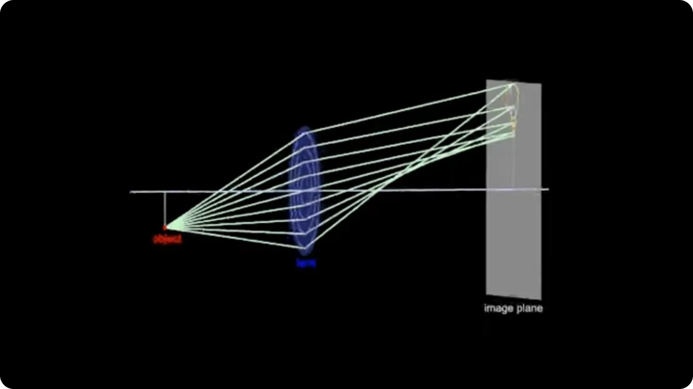
구면수차가 클수록 야간 빛번짐과 눈부심이 심해질 수 있습니다. 아이리움은 구면수차를 줄이는 방향으로 수술합니다.
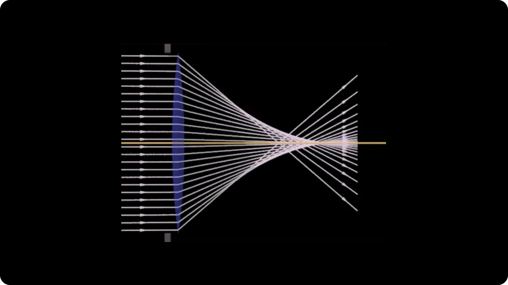
커스텀아이즈 라섹은 수술 전후의 각막 지형도 변화 예측 데이터를 분석하여, 수술 후 각막 표면이 더욱 균일하고 매끄러워지도록 정밀하게 수술을 설계합니다.
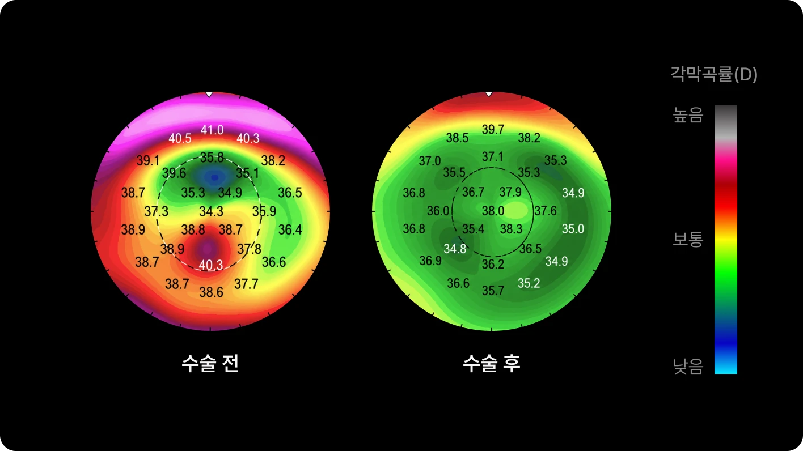
각막강화술을 결합하여 수술 후 각막의 안정성을 극대화합니다. 또한, 수술 전 단계에서부터 각막확장증 가능성을 미리 진단할 수 있는 인공지능(AI) 알고리즘을 글로벌 공동 연구를 통해 개발했습니다.

Driven by Perfection, Proven by Results
검사 시 앉아 있을 때와 달리, 수술을 위해 침대에 누우면 중력과 근육의 긴장도로 인해 눈이 미세하게 회전하는 '안구회선' 현상이 발생합니다. 커스텀아이즈 라섹은 이 자세 변화로 인한 난시축의 오차까지 정밀하게 계산하여 수술을 설계합니다.
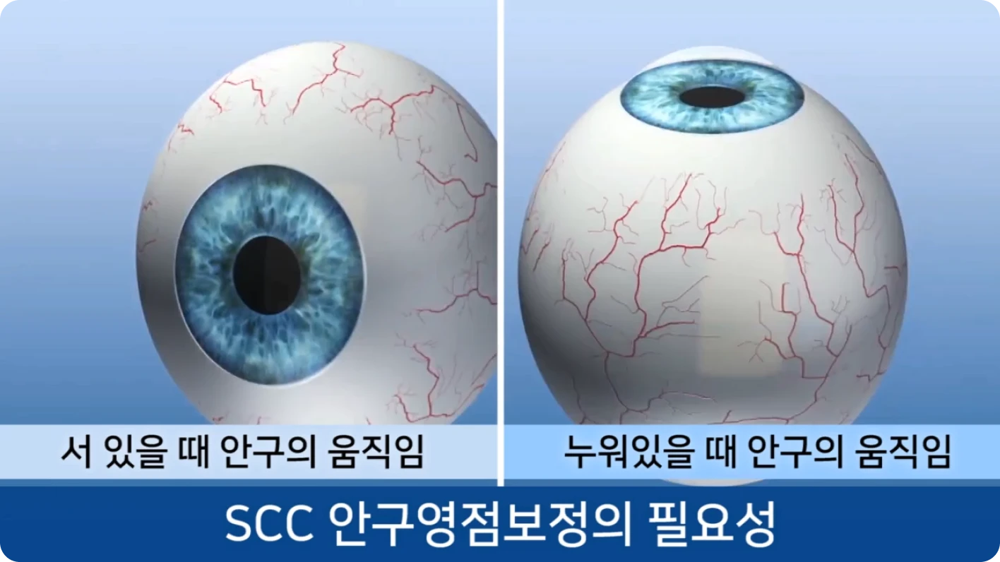
난시 교정의 성패는 정밀한 축 정렬에 달려 있습니다. 아이리움은 엄격한 영점 조정 프로토콜을 바탕으로 레이저 중심축과 환자의 난시 각도를 정확히 일치시켜 시력의 질을 높입니다.

MS-39와 PERAMIS를 통해 각막 지형도와 웨이브프론트 데이터를 정밀 분석하고, 개인별 수술 설계에 반영합니다.
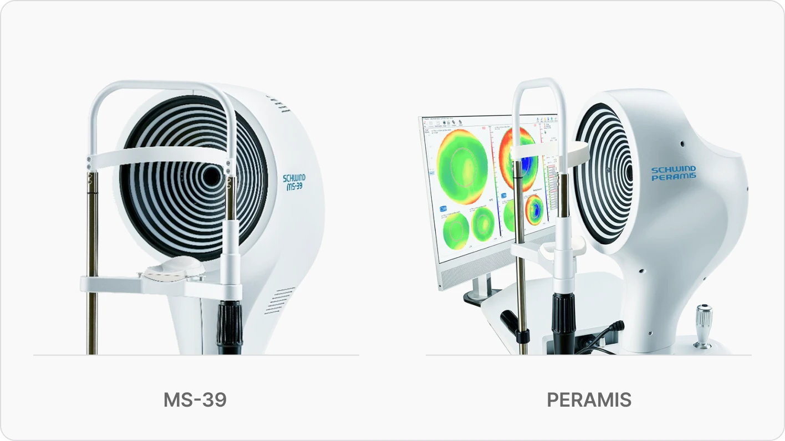
아이리움 투데이라섹, 이런 분께 추천합니다.

빠른 회복과 시력의 질을 함께 원하는 분
야간 운전 등 야간 시력의 질이 중요한 분

운동·야외활동이 많아 외부 충격에 강한 수술을 원하는 분

정밀 분석 기반의 맞춤수술을 원하는 분

과거 시력교정 후 재교정 수술이 필요한 분
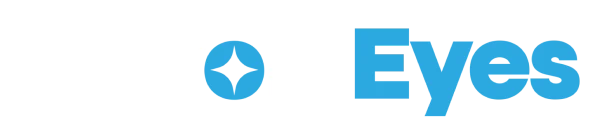
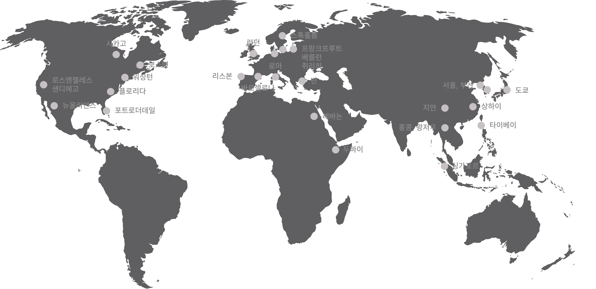
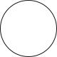
아이리움의 커스텀아이즈
주요 연구 분야
시력의 질 개선 연구
JCRS 2016 · JCRS 2017
고도난시 교정 연구
JCRS 2018
경도근시 맞춤 설계 연구
JCRS 2018
스마일 후 재교정 연구
JCRS 2020
스마일 대비 고위수차 비교 연구
JCRS 2018
각막강화술 결합 안전성 연구
BMC 2016 · JCRS 2017 · Cornea 2017
커스텀아이즈 수술 전, 가장 많이 묻는 질문
아이리움 투데이라섹은 일반 라섹과 무엇이 다른가요?
수술 방식은 정밀검사 결과를 바탕으로 결정됩니다. 근시·난시 정도, 각막 두께와 형태, 고위수차, 야간 빛번짐 우려, 회복 목표 등을 종합해 기본 투데이라섹, 커스텀아이즈 투데이라섹, 커스텀아이즈 Plus 중 적합한 방식을 안내합니다.
투데이라섹과 커스텀아이즈는 어떤 관계인가요?
수술 방식은 정밀검사 결과를 바탕으로 결정됩니다. 근시·난시 정도, 각막 두께와 형태, 고위수차, 야간 빛번짐 우려, 회복 목표 등을 종합해 기본 투데이라섹, 커스텀아이즈 투데이라섹, 커스텀아이즈 Plus 중 적합한 방식을 안내합니다.
각막 상피 회복 2일은 누구나 가능한가요?
수술 방식은 정밀검사 결과를 바탕으로 결정됩니다. 근시·난시 정도, 각막 두께와 형태, 고위수차, 야간 빛번짐 우려, 회복 목표 등을 종합해 기본 투데이라섹, 커스텀아이즈 투데이라섹, 커스텀아이즈 Plus 중 적합한 방식을 안내합니다.
아이리움 투데이라섹은 빠른 회복뿐 아니라, 시력의 질과 각막 안정성까지 고려한
커스텀아이즈 연구를 기반으로 합니다.
기존 방식 대비 커스텀아이즈 수술 결과
Comparison of clinical outcomes between wavefront-optimized versus corneal wavefront-guided transepithelial photorefractive keratectomy for myopic astigmatism. Jun I, Kang DS, Tan J, Choi JY, Heo W, Kim JY, Lee MG, Kim EK, Seo KY, Kim TI. Journal of Cataract & Refractive Surgery. 2017;43(2):174-182. DOI: 10.1016/j.jcrs.2016.11.045
기존 방식 대비 커스텀 아이즈 수술이 수술 후 시력의 질 (야간 빛번짐, 흐려보임 등) 측면에서 우수한 결과를 보임을 증명. 근시/난시 교정 뿐 아니라 수술 후 전반적인 시력의 질 향상을 위한 라섹 수술의 새로운 기준을 제시.
Photorefractive keratectomy combined with corneal wavefront-guided and hyperaspheric ablation profiles to correct myopia. Lee H, Park SY, Yong Kang DS, Ha BJ, Choi JY, Kim EK, Seo KY, Kim TI. Journal of Cataract & Refractive Surgery. 2016;42(6):890-898. DOI: 10.1016/j.jcrs.2016.03.033
기존 방식 대비 커스텀 아이즈 수술이 수술 후 시력의 질 (야간 빛번짐, 흐려보임 등) 측면에서 우수한 결과를 보임을 증명. 근시/난시 교정 뿐 아니라 수술 후 전반적인 시력의 질 향상을 위한 라섹 수술의 새로운 기준을 제시.고도난시에서의 커스텀아이즈 수술 결과
Clinical Outcomes of SMILE With a Triple Centration Technique and Corneal Wavefront-Guided Transepithelial PRK in High Astigmatism. Jun I, Kang DSY, Reinstein DZ, Arba-Mosquera S, Archer TJ, Seo KY, Kim TI. J Refract Surg. 2018 Mar 1;34(3):156-163. doi: 10.3928/1081597X-20180104-03.
고도난시 환자군에서 커스텀 아이즈의 난시 교정 정확도가 기존 방식 대비 우수함을 증명. 고도난시 라섹 수술의 기준을 제시.경도근시에서의 커스텀아이즈 수술 결과
Clinical outcomes of mechanical and transepithelial photorefractive keratectomy in low myopia with a large ablation zone. Jun I, Yong Kang DS, Arba-Mosquera S, Jean SK, Kim EK, Seo KY, Kim TI. J Cataract Refract Surg. 2019 Jul;45(7):977-984. doi: 10.1016j.jcrs.2019.02.007. Epub 2019 Apr 24.
경도 근시 환자에서 광학부를 최대화하여 커스텀 아이즈 수술 진행시 보다 향상된 시력 교정 효과가 있음을 규명. 경도 근시에서의 새로운 수술 기준 제시.타원 스마일 수술 후 재교정 사례
Customized Wavefront-Optimized Transepithelial Photorefractive Keratectomy for a Retained Lenticule Fragment After Primary SMILE. Chung B, Kang DSY, Arba-Mosquera S, Kim TI. J Refract Surg. 2020 Jun 1;36(6):395-399. doi: 10.3928/1081597X-20200512-01.
타원에서 스마일 수술 후 시력불편으로 재교정을 위해 커스텀 아이즈 라섹을 시행하여 성공적으로 시력 회복한 사례를 논문으로 발표. 커스텀 아이즈를 적용한 재교정 치료의 우수한 결과 입증.스마일 대비 커스텀아이즈 수술 결과
Comparing corneal higher-order aberrations in corneal wavefront-guided transepithelial photorefractive keratectomy versus small-incision lenticule extraction. Lee H, Yong Kang DS, Reinstein DZ, Arba-Mosquera S, Kim EK, Seo KY, Kim TI. J Cataract Refract Surg. 2018 Jun;44(6):725-733. doi: 10.1016/j.jcrs.2018.03.028. Epub 2018 May 19.
시력의 질을 좌우하는 각막 고위 수차 발생에 있어 스마일 대비 동등한 결과를 보임을 증명.각막강화술 결합 커스텀아이즈 안전성
Effect of accelerated corneal crosslinking combined with transepithelial photorefractive keratectomy on dynamic corneal response parameters and biomechanically corrected intraocular pressure measured with a dynamic Scheimpflug analyzer in healthy myopic patients. Lee H, Roberts CJ, Ambrósio R Jr, Elsheikh A, Kang DSY, Kim TI. J Cataract Refract Surg. 2017 Jul;43(7):937-945. doi: 10.1016/j.jcrs.2017.04.036.
각막강화술을 결합한 커스텀 아이즈의 수술이 기존 일반 라식 수술 대비 각막안정성 수치에서 실제로 더 안전함을 최초로 발표. 또한 각막강화술 결합시 시력 교정의 정확도가 더 향상됨을 증명함. 안전한 라섹 수술을 위한 기준 제시.
Comparison of Outcomes Between Combined Transepithelial Photorefractive Keratectomy With and Without Accelerated Corneal Collagen Cross-Linking: A 1-Year Study. Lee H, Yong Kang DS, Ha BJ, Choi JY, Kim EK, Seo KY, Kim TI. Cornea. 2017 Oct;36(10):1213-1220. doi: 10.1097/ICO.0000000000001308.
각막강화술을 결합한 커스텀 아이즈의 수술이 기존 일반 라식 수술 대비 각막안정성 수치에서 실제로 더 안전함을 최초로 발표. 또한 각막강화술 결합시 시력 교정의 정확도가 더 향상됨을 증명함. 안전한 라섹 수술을 위한 기준 제시.
Changes in posterior corneal elevations after combined transepithelial photorefractive keratectomy and accelerated corneal collagen cross-linking: retrospective, comparative observational case series. Lee H, Kang DS, Ha BJ, Choi JY, Kim EK, Seo KY, Kim TI. BMC Ophthalmol. 2016 Aug 8;16:139. doi: 10.1186/s12886-016-0320-3.
각막강화술을 결합한 커스텀 아이즈의 수술이 기존 일반 라식 수술 대비 각막안정성 수치에서 실제로 더 안전함을 최초로 발표. 또한 각막강화술 결합시 시력 교정의 정확도가 더 향상됨을 증명함. 안전한 라섹 수술을 위한 기준 제시.